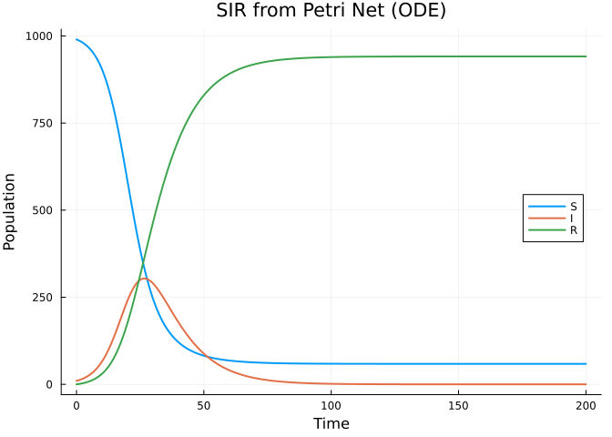
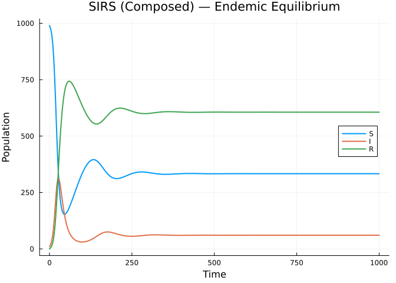
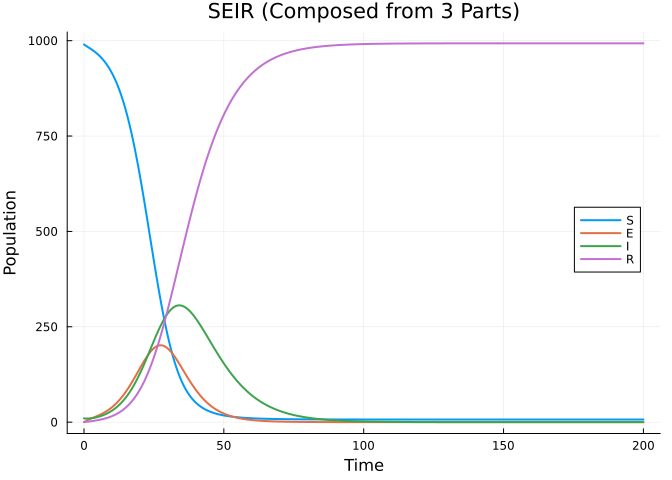
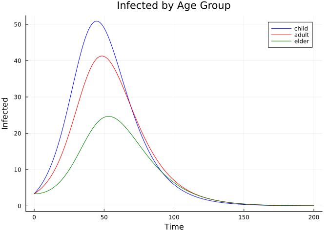
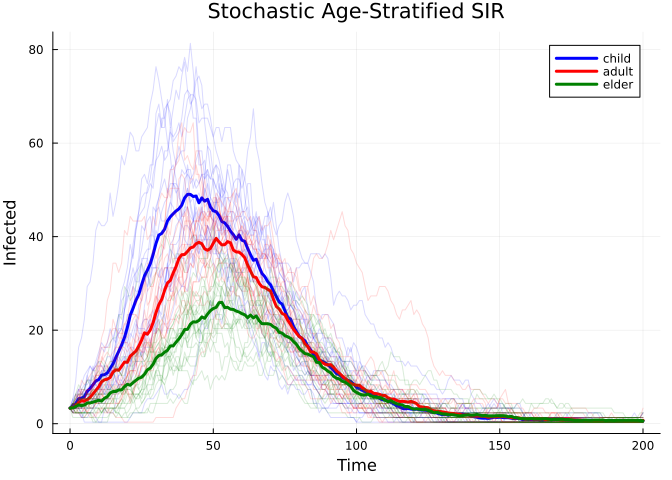
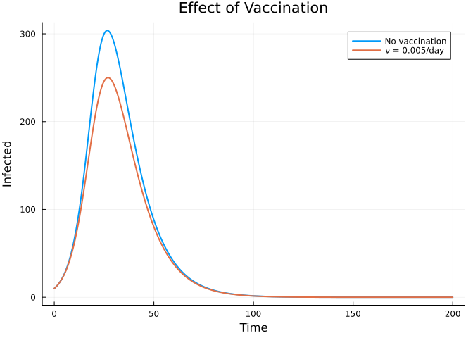

Compositional Model Building
Introduction
This vignette demonstrates Odin.jl’s categorical extension for building epidemiological models compositionally. Instead of writing model equations by hand, you define models as Petri nets — specifying compartments and transitions — then compose sub-models, stratify across groups, and lower the result to a simulatable ODE or stochastic model.
This approach is inspired by AlgebraicPetri.jl and the broader AlgebraicJulia ecosystem.
Defining Models as Petri Nets
An EpiNet is a labelled Petri net where:
- Species are compartments (S, I, R, etc.)
- Transitions are epidemiological processes (infection, recovery, etc.)
- Each transition has input arcs (species consumed) and output arcs (species produced)
- Each transition has a rate parameter
using Odin
using Plots
# Define an SIR model as a Petri net
sir = EpiNet(
[:S => 990.0, :I => 10.0, :R => 0.0],
[:inf => ([:S, :I] => [:I, :I], :beta), # infection: S + I → 2I
:rec => ([:I] => [:R], :gamma)] # recovery: I → R
)
println("Species: ", species_names(sir))
println("Transitions: ", transition_names(sir))
println("Stoichiometry matrix:")
display(stoichiometry_matrix(sir))Species: [:S, :I, :R]
Transitions: [:inf, :rec]
Stoichiometry matrix:
3×2 Matrix{Int64}:
-1 0
1 -1
0 1Pre-built models are available for common structures:
# All of these return EpiNet objects
sir = SIR(; S0=990.0, I0=10.0)
seir = SEIR(; S0=990.0, I0=10.0)
sirs = SIRS(; S0=990.0, I0=10.0)
seirs = SEIRS(; S0=990.0, I0=10.0)
for (name, net) in [("SIR", sir), ("SEIR", seir), ("SIRS", sirs), ("SEIRS", seirs)]
println("$name: $(nspecies(net)) species, $(ntransitions(net)) transitions")
endSIR: 3 species, 2 transitions
SEIR: 4 species, 3 transitions
SIRS: 3 species, 3 transitions
SEIRS: 4 species, 4 transitionsLowering to a Simulatable Model
The compile() function compiles a Petri net into an @odin model:
# Lower SIR to ODE with frequency-dependent transmission
sir_gen = compile(sir; mode=:ode, frequency_dependent=true, N=:N,
params=Dict(:beta => 0.3, :gamma => 0.1, :N => 1000.0))
# Simulate
sys = System(sir_gen, (beta=0.3, gamma=0.1, N=1000.0))
reset!(sys)
times = collect(0.0:0.5:200.0)
result = simulate(sys, times)
plot(times, [result[1,1,:] result[2,1,:] result[3,1,:]],
label=["S" "I" "R"],
xlabel="Time", ylabel="Population",
title="SIR from Petri Net (ODE)",
linewidth=2, legend=:right)
Composition: Building Models from Parts
The key advantage of the categorical approach is composition. Define sub-models independently and merge them:
# Sub-model 1: infection process
infection = EpiNet(
[:S => 990.0, :I => 10.0],
[:inf => ([:S, :I] => [:I, :I], :beta)]
)
# Sub-model 2: recovery process
recovery = EpiNet(
[:I => 10.0, :R => 0.0],
[:rec => ([:I] => [:R], :gamma)]
)
# Sub-model 3: waning immunity
waning = EpiNet(
[:R => 0.0, :S => 990.0],
[:wane => ([:R] => [:S], :delta)]
)
# Compose: shared species (I, S, R) are automatically merged
sirs_composed = compose(infection, recovery, waning)
println("SIRS species: ", species_names(sirs_composed))
println("SIRS transitions: ", transition_names(sirs_composed))SIRS species: [:S, :I, :R]
SIRS transitions: [:inf, :rec, :wane]# Simulate the composed SIRS model — shows endemic equilibrium
sirs_gen = compile(sirs_composed; mode=:ode, frequency_dependent=true, N=:N,
params=Dict(:beta => 0.3, :gamma => 0.1, :delta => 0.01, :N => 1000.0))
sys = System(sirs_gen, (beta=0.3, gamma=0.1, delta=0.01, N=1000.0))
reset!(sys)
times = collect(0.0:1.0:1000.0)
result = simulate(sys, times)
plot(times, [result[1,1,:] result[2,1,:] result[3,1,:]],
label=["S" "I" "R"],
xlabel="Time", ylabel="Population",
title="SIRS (Composed) — Endemic Equilibrium",
linewidth=2, legend=:right)
Composing an SEIR from Three Parts
# Infection: S exposed by I
exposure = EpiNet(
[:S => 990.0, :E => 0.0, :I => 10.0],
[:inf => ([:S, :I] => [:E, :I], :beta)]
)
# Progression: E becomes I
progression = EpiNet(
[:E => 0.0, :I => 10.0],
[:prog => ([:E] => [:I], :sigma)]
)
# Recovery: I recovers to R
recovery_seir = EpiNet(
[:I => 10.0, :R => 0.0],
[:rec => ([:I] => [:R], :gamma)]
)
seir_composed = compose(exposure, progression, recovery_seir)
println("SEIR: ", species_names(seir_composed), " — ", transition_names(seir_composed))
seir_gen = compile(seir_composed; mode=:ode, frequency_dependent=true, N=:N,
params=Dict(:beta => 0.5, :sigma => 0.2, :gamma => 0.1, :N => 1000.0))
sys = System(seir_gen, (beta=0.5, sigma=0.2, gamma=0.1, N=1000.0))
reset!(sys)
times = collect(0.0:0.5:200.0)
result = simulate(sys, times)
plot(times, [result[1,1,:] result[2,1,:] result[3,1,:] result[4,1,:]],
label=["S" "E" "I" "R"],
xlabel="Time", ylabel="Population",
title="SEIR (Composed from 3 Parts)",
linewidth=2, legend=:right)SEIR: [:S, :E, :I, :R] — [:inf, :prog, :rec]
Stratification: Adding Age Structure
Given a base model, stratify() replicates it across groups (e.g., age classes) and adds inter-group mixing via a contact matrix:
# Start with a simple SIR
sir_base = SIR(; S0=990.0, I0=10.0)
# Define contact matrix (3 age groups)
# Higher within-group contact for children, lower for elderly
C = [3.0 1.0 0.5;
1.0 2.0 0.5;
0.5 0.5 1.0]
sir_age = stratify(sir_base, [:child, :adult, :elder]; contact=C)
println("Stratified species: ", species_names(sir_age))
println("Number of transitions: ", ntransitions(sir_age))Stratified species: [:S_child, :I_child, :R_child, :S_adult, :I_adult, :R_adult, :S_elder, :I_elder, :R_elder]
Number of transitions: 12# Simulate the age-stratified model
sir_age_gen = compile(sir_age; mode=:ode, frequency_dependent=true, N=:N,
params=Dict(:beta => 0.15, :gamma => 0.1, :N => 1000.0))
sys = System(sir_age_gen, (beta=0.15, gamma=0.1, N=1000.0))
reset!(sys)
times = collect(0.0:0.5:200.0)
result = simulate(sys, times)
sn = species_names(sir_age)
groups = [:child, :adult, :elder]
colors = [:blue, :red, :green]
# Plot infected by age group
p = plot(title="Infected by Age Group", xlabel="Time", ylabel="Infected", linewidth=2)
for (i, g) in enumerate(groups)
idx = findfirst(==(Symbol(:I_, g)), sn)
plot!(p, times, result[idx, 1, :], label=string(g), color=colors[i])
end
p
# Compare attack rates
println("Final attack rates:")
for (i, g) in enumerate(groups)
R_idx = findfirst(==(Symbol(:R_, g)), sn)
S_idx = findfirst(==(Symbol(:S_, g)), sn)
R_final = result[R_idx, 1, end]
pop = result[S_idx, 1, 1] + result[findfirst(==(Symbol(:I_, g)), sn), 1, 1]
ar = 100 * R_final / pop
println(" $g: $(round(ar; digits=1))%")
endFinal attack rates:
child: 81.9%
adult: 71.3%
elder: 46.5%Stochastic Stratified Model
The same Petri net can be lowered to a stochastic discrete-time model:
# Lower to stochastic
sir_age_stoch = compile(sir_age; mode=:discrete, frequency_dependent=true, N=:N,
params=Dict(:beta => 0.15, :gamma => 0.1, :N => 1000.0))
sys = System(sir_age_stoch, (beta=0.15, gamma=0.1, N=1000.0);
n_particles=20, dt=0.25, seed=42)
reset!(sys)
times = collect(0.0:1.0:200.0)
result = simulate(sys, times)
# Plot with stochastic uncertainty
p = plot(title="Stochastic Age-Stratified SIR", xlabel="Time", ylabel="Infected")
for (i, g) in enumerate(groups)
idx = findfirst(==(Symbol(:I_, g)), sn)
for p_idx in 1:20
plot!(p, times, result[idx, p_idx, :], alpha=0.15, color=colors[i], label="")
end
# Mean trajectory
mean_traj = vec(sum(result[idx, :, :], dims=1) ./ 20)
plot!(p, times, mean_traj, color=colors[i], linewidth=3, label=string(g))
end
p
SIR + Vaccination via Composition
Composition naturally supports adding new interventions to existing models:
# Start with basic SIR
sir_base = SIR(; S0=990.0, I0=10.0)
# Add vaccination: S → V (vaccinated immune class)
vaccination = EpiNet(
[:S => 990.0, :V => 0.0],
[:vax => ([:S] => [:V], :nu)]
)
# Compose: S is shared, V is new
sir_vax = compose(sir_base, vaccination)
println("SIR+Vax species: ", species_names(sir_vax))
println("SIR+Vax transitions: ", transition_names(sir_vax))
# Compare with and without vaccination
times = collect(0.0:0.5:200.0)
pars_novax = (beta=0.3, gamma=0.1, nu=0.0, N=1000.0)
pars_vax = (beta=0.3, gamma=0.1, nu=0.005, N=1000.0)
gen = compile(sir_vax; mode=:ode, frequency_dependent=true, N=:N,
params=Dict(:beta => 0.3, :gamma => 0.1, :nu => 0.0, :N => 1000.0))
sys1 = System(gen, pars_novax)
reset!(sys1)
r1 = simulate(sys1, times)
sys2 = System(gen, pars_vax)
reset!(sys2)
r2 = simulate(sys2, times)
plot(times, [r1[2,1,:] r2[2,1,:]],
label=["No vaccination" "ν = 0.005/day"],
xlabel="Time", ylabel="Infected",
title="Effect of Vaccination",
linewidth=2, legend=:topright)SIR+Vax species: [:S, :I, :R, :V]
SIR+Vax transitions: [:inf, :rec, :vax]
Inspecting Generated Code
You can inspect the odin DSL expressions that compile() generates:
sir_simple = SIR()
exprs = lower_expr(sir_simple; mode=:ode, frequency_dependent=true, N=:N,
params=Dict(:beta => 0.3, :gamma => 0.1, :N => 1000.0))
println("Generated @odin expressions:")
for e in exprs
println(" ", e)
endGenerated @odin expressions:
N = parameter(1000.0)
beta = parameter(0.3)
gamma = parameter(0.1)
initial(S) = begin
#= /Users/sdwfrost/Projects/odin/Odin.jl/src/categorical/lowering.jl:88 =#
990.0
end
initial(I) = begin
#= /Users/sdwfrost/Projects/odin/Odin.jl/src/categorical/lowering.jl:88 =#
10.0
end
initial(R) = begin
#= /Users/sdwfrost/Projects/odin/Odin.jl/src/categorical/lowering.jl:88 =#
0.0
end
flow_inf = ((beta * S) * I) / N
flow_rec = gamma * I
deriv(S) = begin
#= /Users/sdwfrost/Projects/odin/Odin.jl/src/categorical/lowering.jl:150 =#
-flow_inf
end
deriv(I) = begin
#= /Users/sdwfrost/Projects/odin/Odin.jl/src/categorical/lowering.jl:150 =#
flow_inf - flow_rec
end
deriv(R) = begin
#= /Users/sdwfrost/Projects/odin/Odin.jl/src/categorical/lowering.jl:150 =#
flow_rec
endSummary
The categorical extension provides:
| Operation | Function | Description |
|---|---|---|
| Define | EpiNet(species, transitions) | Create a Petri net model |
| Compose | compose(net1, net2, ...) | Merge models by shared species |
| Stratify | stratify(net, groups; contact=C) | Replicate across groups |
| Lower | compile(net; mode=:ode) | Compile to simulatable model |
| Inspect | lower_expr(net) | View generated DSL code |
Pre-built models: sir_net, seir_net, sis_net, sirs_net, seirs_net, sir_vax_net.